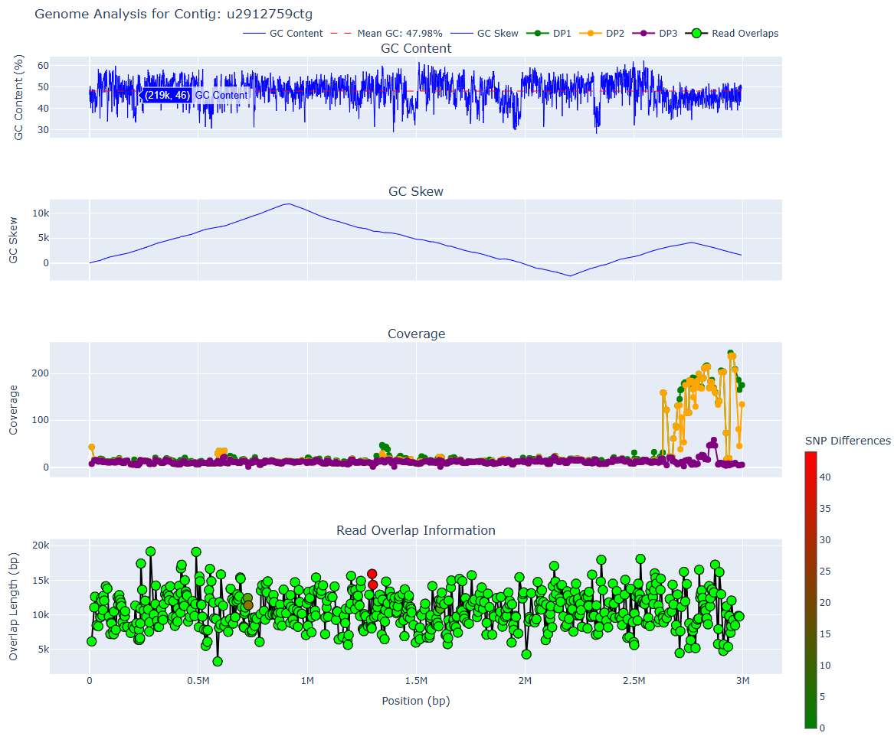
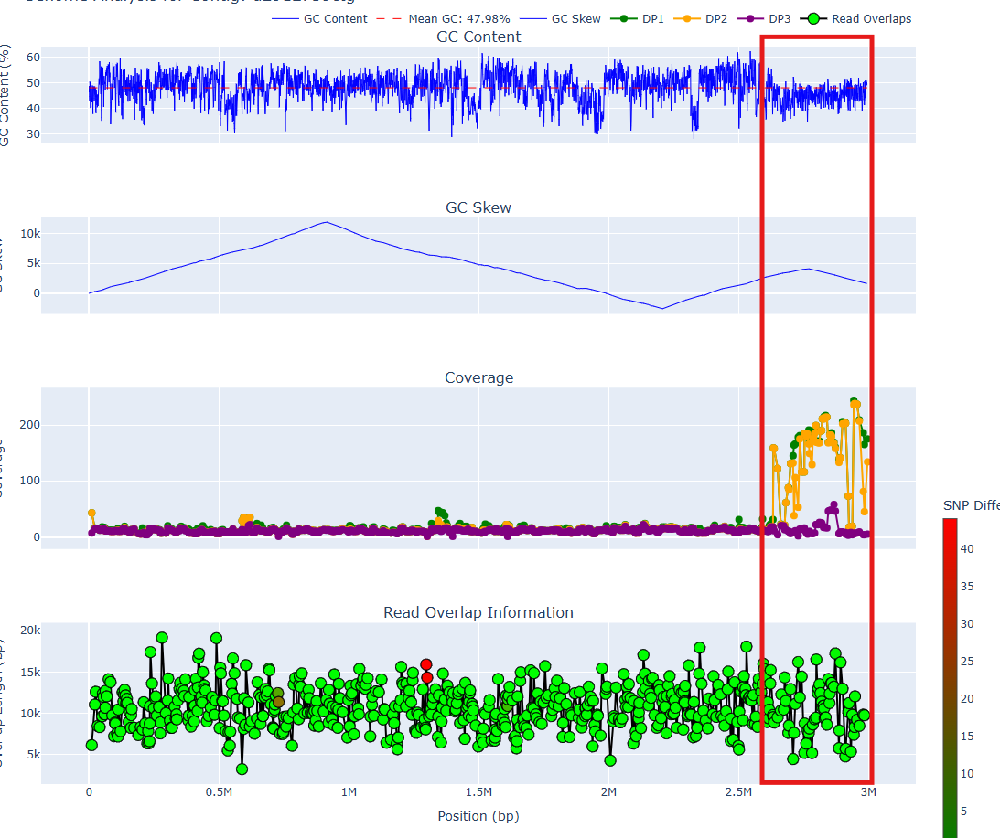

Manual inspection with mylotools
Important
We will be using mylotools. Make sure to install this first.
Using mylotools plot or mylotools report to manually inspect long-read overlaps and find chimeras
We can generate QC plots to inspect GC content, read overlaps, and coverage information across a contig. You can generate an interactive report for all > 300 kbp contigs with mylotools report with
cd myloasm_output
mylotools report --output html_report
then use the dropdown menu to find a contig of interest.
Generating a report for a single contig of interest
mylotools report is quite large. If you only want to plot a single contig of interest: e.g. uXXXXXctg, simply do
cd myloasm_output
mylotools plot u2912759ctg
ls u2912759ctg_analysis.html
Understanding QC plots

Panel 1: GC content
- The first panel is the GC content averaged across windows.
- Prokaryotic genomes should have relatively consistent GC content across the genome. If you see a sharp change in GC content, it may indicate a chimeric breakpoint.
Panel 2: Cumulative GC Skew
- See this article or this one for more information about GC skew.
- Many prokaryotes have a peak and a trough, indicating origin and terminus of replication.
Panel 3: Coverage across the genome
- Each dot is a read that the contig was constructed from.
- There are 3 different read coverage values. See here for more information about what they mean. DP1 is the most permissive coverage value whereas DP3 indicates exact coverage (perfect alignments).
Panel 4: Read overlap information within assembly graph
- Each dot is a read overlap. Statistics about lengths/the read IDs are shown.
- The colour indicates the number of shared/differing SNPs between the reads. An ideal contig involves no differing SNPs between reads, but sometimes this is impossible (e.g. high levels of recombination).
Finding chimeric breakpoints from the plot graph
The x-axis are roughly shared across all of the four plots. The first two panels x-axis are for the polished contig. The bottom two are the raw, unpolished contig. These differ very slightly.
To find breakpoints, we can look at points on the x-axis where there are unexpected changes.
- GC content should be roughly constant across a prokaryotic genome
- GC skew often has a single peak and a trough (see here)
- Coverage should be constant across a contig. However, DP1 (green) and DP2 (yellow) can vary significantly -- inexact repeat regions (across strains or species) can elevate the DP1/DP2 values.
- Read overlaps should be long. Small overlaps can be suspicious. High # of SNP differences are not ideal, but sometimes can not be avoided.
Case study: a contaminated contig
The below graph is for a 99% complete but 18% contaminated contig (estimated by CheckM2) from an anaerobic digester metagenome. We see irregularities at around the 2.6 Mbp position.

A few issues occur:
- The GC content has a noticeable downward shift
- The cumulative GC skew goes up and down again
- The DP1/DP2 coverages are variable and high, whereas DP1/DP2 before the breakpoint are consistently low
This is quite strong evidence for a chimeric join. After removing the bases from 2.6 Mbp onward and rerunning CheckM2, we get a 97% complete and 0% contaminated contig, confirming our suspicion.
Note
Around the breakpoint, all overlaps have length > 8kbp and are almost perfect. This was probably a recent horizontally transferred region. Even with long reads, metagenomic assembly is still extremely difficult.